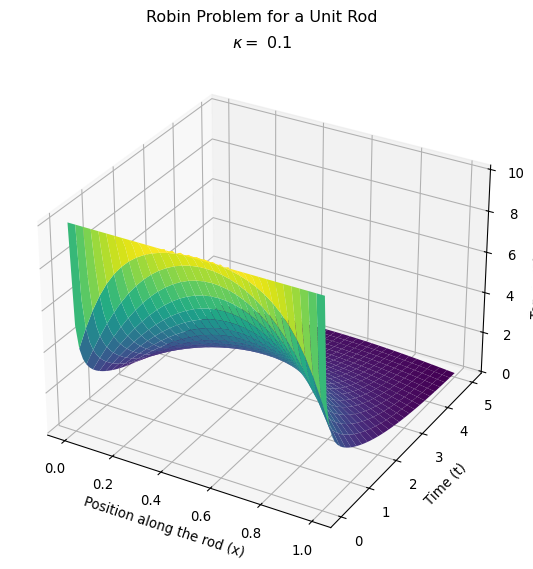

import numpy as np
import matplotlib.pyplot as plt
import matplotlib as mpl
from petsc4py import PETSc
from mpi4py import MPI
from dolfinx import default_scalar_type, io
from dolfinx.fem import (Constant, Function, functionspace, form)
from dolfinx.fem.petsc import (LinearProblem, assemble_matrix, create_vector,
assemble_vector, apply_lifting, set_bc)
from dolfinx.mesh import create_interval, locate_entities, meshtags
from ufl import (SpatialCoordinate, inner, ds, dx, Measure, TrialFunction, TestFunction, grad)Modeling a 1D Unit Rod with convection
I’m still getting used to the FEniCSx software, so I’m going to go through the process of modeling a 1D rod, using Robin boundary conditions, and heavily annotating my code. This is (finally?) getting closer to a “real world” system, as it has the correct boundary condition describing convection. But it is still a 1D rod so, your mileage may vary.
Setting up the problem
First, I’ll load in all of the dependencies required. There are a few “families” of dependencies that I’m including. These are:
numpyandmatplotlibbecause they are standard python tools for dealing with tabular data and graphicspetsc4pyandmpi4pyare libraries often used in FEniCSx code because they support parallelization and speed up computation.dolfinxis the package that I’m using to set up the Finite Element Method (part of FEniCSx)uflis a package with FEniCSx that translates a more convential mathematical notation into forms required bydolfinx. I like it when code “looks like” math/physics. (That’s why I teach students how to create cell names and named ranges when using Excel.)
Constant Parameters:
None of these will have units because I’m living in a willy-nilly world without units. (For now).
- \(T_0 = 10\) uniform initial temperature for the rod.
- \(T_\text{ext} = 0\) uniform and constant temperature of the surroundings.
- \(h = 0.5\) “Heat conduction” coefficient between rod and surroundings
- \(\kappa = 1\) “Thermal conductivity” of rod
- The simulation will run for 5 DataWolfs (my new, made up dimensionless time unit)
- \(dt = 0.1\) Time step size.
- \(L = 1\) rod “length”
t = 0
final_time = 5.0 # Final time for the simulation
dt = 0.1 # Time step size
num_steps = int((final_time - t) / dt)
T0 = 10.0 # Initial uniform temperature of the rod
extTemp = 0.0 # External temperature at the boundaries (constant)
tPlot = np.linspace(0, final_time, num_steps+1) # Time points for plotting
# Define the mesh and function space
n_elements = 32
# Create a 1D domain representing the rod from 0 to 1
domain = create_interval(
MPI.COMM_WORLD, # MPI communicator
n_elements, # Number of elements in the mesh
[0.0, 1.0] # Interval from 0 to 1 (the length of the rod)
)
x = SpatialCoordinate(domain) # Spatial coordinates of the domain
tempExt = lambda x: extTemp # External temperature function (constant in this case)
s = tempExt(x) # External temperature at the boundary
f = Constant(domain, PETSc.ScalarType(0)) # Source term (zero in this case)
h = Constant(domain, PETSc.ScalarType(0.5)) # Robin boundary condition coefficient
kappa = Constant(domain, PETSc.ScalarType(1.0)) # Thermal conductivitySet up the initial condition
We will create a function space that assumes linear elements between the grid degrees of freedom. This is the Galerkin method I talked about previously, where the basis functions are linear functions localized near each of the mesh points: \[ \varphi_i = \begin{cases} \left(1-\frac{\left|x-x_i\right|}{h} \right) &\left|x-x_i\right|\leq h \\ 0 & \text{else} \end{cases} \]
I will create two functions in this function space:
uPrevis the solution at the previous time step, representing the \(u^{k-1}\) in the linear form.uWorkis the solution at the current time step, representing the \(u^k\) in the bilinear form.
# Create a function space for the finite element method
V = functionspace(
domain, ('Lagrange',1) # Linear Lagrange elements
)
# Create a constant function for the initial condition
def initial_condition(x):
return np.full(x.shape[1], T0, dtype=np.float64) # Initial temperature T0
uPrev = Function(V)
uPrev.name = "uPrev" # Name the function for clarity
uPrev.interpolate(initial_condition) # Interpolate the initial condition into the function space
uWork = Function(V) # Function to hold the solution at the current time step
uWork.name = "uWork" # Name the function for clarity
uWork.interpolate(initial_condition) # Initialize with the same initial conditionDefine the boundary condition
We are using the Robin boundary condition, suitable for describing convection. \[ -\kappa \left(\hat{n}\cdot\nabla\right) u^k = h^k(u^k - s^k) \quad \forall x\in\{0,1\} \]
The code below starts with a python version of the above definition of where the boundary is, and then uses an automated process to convert that into a useful definition for dolfinx. I’m also defining the measures for integration based on these boundary definitions. Note that Fenics Tutorials usually have at least one surface that has an explicit Dirichlet boundary condition.
boundaries = [
(1, lambda x: np.isclose(x[0], 0.0)), # Left boundary located at x=0
(2, lambda x: np.isclose(x[0], 1.0)) # Right boundary located at x=1
]
facet_indices, facet_markers = [], []
tdim = domain.topology.dim
fdim = tdim - 1 # Dimension of the facets (1D for a rod)
for (marker, locator) in boundaries:
facets = locate_entities(domain, fdim, locator)
facet_indices.append(facets)
facet_markers.append(np.full_like(facets, marker))
facet_indices = np.hstack(facet_indices).astype(np.int32)
facet_markers = np.hstack(facet_markers).astype(np.int32)
sorted_facets = np.argsort(facet_indices)
facet_tag = meshtags(domain, fdim, facet_indices[sorted_facets], facet_markers[sorted_facets])
bcs = [] # No Dirichlet boundary conditions, so we leave this empty
dx = Measure("dx", domain=domain) # Define the measure for the volume integral
ds = Measure("ds", domain=domain, subdomain_data=facet_tag) # Define the measure for the boundary integralSet up the variational formulation
As stated in previous posts, the variational formulation (note: \(u^k \rightarrow u\)) for this problem is: \[
a(u,v) = L(v)
\] where the bilinear form is: \[
a(u,v) = \int_\Omega uv dx + \int_\Omega \Delta t \kappa \nabla u \cdot \nabla v dx + \sum_l \int_{\Gamma^R_l} \frac{\Delta t}{\kappa} u v ds
\] and the linear form (for the Robin condition only) is: \[
L(v) = \int_\Omega u^{k-1} v dx + \int_\Omega f v dx + \sum_l \int_{\Gamma^R_l} \Delta t h_l s_l v ds
\] Let’s define the trial function u and the test function v and set up these forms:
u = TrialFunction(V) # Trial function for the finite element method
v = TestFunction(V) # Test function for the finite element method
a = u * v * dx + dt * kappa * inner(grad(u), grad(v)) * dx + dt * h / kappa * u * v * ds # Bilinear form for the RBC
L = (uPrev + dt * f) * v * dx + dt * h / kappa * s * v * ds # Linear form for the RBC
bilinear_form = form(a) # Bilinear form for the weak formulation
linear_form = form(L) # Linear form for the weak formulationConvert into a Linear Algebra problem
One of the reasons that we use the Finite Element method is that computers are pretty good at doing linear algebra operations quickly. So we begin by setting up the linear algebra structures.
A = assemble_matrix(bilinear_form, bcs=bcs) # Assemble the matrix A
A.assemble() # Finalize the assembly of the matrix A
b = create_vector(linear_form) # Create a vector for the right-hand sideNow let’s set up a framework to solve the linear system. Note, the 3rd and 4th lines below are talking about a “Preconditioner”. I spent some time figuring out what that was all about. It does a LU decomposition, which is a form of Gaussian Elimination (ish). Basically, its all about speeding things up knowing that this is a sparse matrix system (remember, only neighboring elements contribute due to the localization of the basis functions).
solver = PETSc.KSP().create(domain.comm)
solver.setOperators(A) # Set the matrix A for the solver
solver.setType(PETSc.KSP.Type.PREONLY) # Use a preconditioner
solver.getPC().setType(PETSc.PC.Type.LU) # Use LU preconditionerBegin a surface plot:
I’m going to use a matplotlib surface plot to display my result rather than pyvista. I was playing around on StackExchange and came across a post that complained about why a pyvista version of a plot looked so ugly when matplotlib could do it so easily. The answer was basically, that the poster used pyvista correctly, it just contained data that was on vastly different scales. The answerer said something to the effect of, “You have to tell PyVista to lie to you.” My question (at least for now) is, “How does PyVista know my units are meaningful?” Since my units are not (yet) meaningful, I’ll stick with matplotlib. Plus, I always try to learn only one thing at a time.
xMesh = domain.geometry.x[: ,0]
Tc, Xc = np.meshgrid(tPlot, xMesh) # Create a mesh grid for plotting
Uc = np.zeros_like(Tc)
Uc[:, 0] = uWork.x.array # Initial condition for plottingAdvance in time
Now we need to advance in time, solving the linear system at each time-step. Note that the solver assumes that you are solving the equation: \[
A x = b
\] at each time step, so the linear form needs to be assembled into the vector b.
for i in range(num_steps):
t += dt # Current time
# Update the RHS reusing the previous solution
with b.localForm() as loc_b:
loc_b.set(0.0)
assemble_vector(b, linear_form)
apply_lifting(b, [bilinear_form], [bcs]) # Apply boundary conditions
b.ghostUpdate(addv=PETSc.InsertMode.ADD_VALUES, mode=PETSc.ScatterMode.REVERSE) # Update ghost values
set_bc(b, bcs) # Set the boundary conditions
# Solve linear problem
solver.solve(b, uWork.x.petsc_vec)
# Put the solution in our uWork object
uWork.x.scatter_forward()
# Update the solution at the current time step for plotting
Uc[:, i+1] = uWork.x.array
# Update solution at previous time step (uPrev)
uPrev.x.array[:] = uWork.x.arrayMake a pretty picture
Make the plot the normal matplotlib way.
fig, ax = plt.subplots(subplot_kw={'projection': '3d'},figsize=(8,7) ) # Create a 3D plot
ax.plot_surface(Xc, Tc, Uc, cmap='viridis', edgecolor='none') # Plot the FENICS solution
ax.set_title(rf'$\kappa = ${kappa.value:.2f}')
ax.set_xlabel('Position along the rod (x)') # X-axis label
ax.set_ylabel('Time (t)') # Y-axis label
ax.set_zlabel('Temperature (u)') # Z-axis label
plt.tight_layout() # Adjust layout to prevent overlap
plt.suptitle('Robin Problem for a Unit Rod') # Overall title for the plot
plt.subplots_adjust(top=0.9) # Adjust the top margin to fit
plt.show() # Show the plot
Compare the behavior for different heat transfer coefficients
Let’s make this plot to compare with the one I made where I adjusted the heat transfer coefficient on my homemade version of the finite element method.

Next steps
I’m going to add in more dimensions, keeping the Robin condition. Specifically, I’m going to model a 2D sheet and a 3D box that are analogous to the above system. The rationale for this is that I want to start learning how to use pyvista, a 3D visualization tool that is used in many FEniCSx tutorials. It seems…unproductive…to use 2D/3D modeling tools to describe 1D systems.
After that, I’ll need to do two things:
- Go back to the physics and make sure I can do units correctly. This is especially important for dealing with external heat sources.
- Figure out how to make composite boundaries. Ultimately, I want to model a house, so I need to figure out how I want to create walls, doors, and windows.